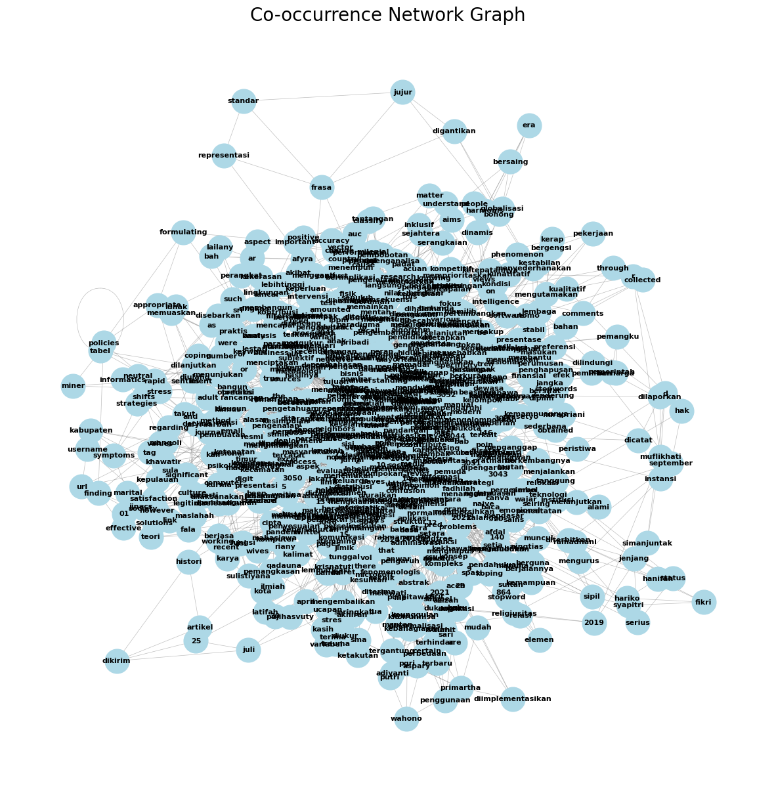
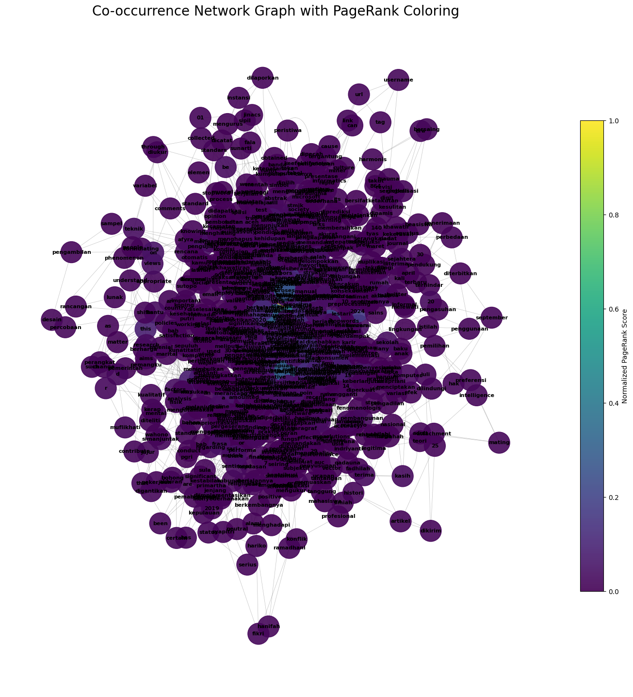

H.Word_Graph#
Tugas word_graph paper#
##1.Estraksi Teks dari PDF
pip install --upgrade pymupdf
Collecting pymupdf
Downloading pymupdf-1.26.6-cp310-abi3-manylinux_2_28_x86_64.whl.metadata (3.4 kB)
Downloading pymupdf-1.26.6-cp310-abi3-manylinux_2_28_x86_64.whl (24.1 MB)
━━━━━━━━━━━━━━━━━━━━━━━━━━━━━━━━━━━━━━━━ 24.1/24.1 MB 48.6 MB/s eta 0:00:00
?25hInstalling collected packages: pymupdf
Successfully installed pymupdf-1.26.6
import pymupdf
doc = pymupdf.open("Analisis_Sentiment.pdf")
out = open("output.txt", "wb")
for page in doc:
text = page.get_text().encode("utf8")
out.write(text)
out.write(bytes((12,))) # page delimiter
out.close()
2.Melakukan Estrak Kalimat#
%%capture
!pip install nltk
import nltk
nltk.download('punkt')
nltk.download('punkt_tab') # opsional
import pandas as pd
with open('output.txt', 'r', encoding='utf-8') as file:
teks = file.read()
print(teks[:200]) # tampilkan 200 karakter pertama
sentences = nltk.sent_tokenize(teks)
df_kalimat = pd.DataFrame(sentences, columns=['kalimat'])
display(df_kalimat.head())
import pandas as pd
df = pd.DataFrame(sentences, columns=['kalimat'])
print(df)
kalimat
0 3043 \nJurnal Indonesia : Manajemen Informatik...
1 5 No.
2 3 (2024) \n \n \n \n \n \n \n \n \n \n \n \n \...
3 Email: afyraarbah@gmail.com 1, sri.lestari1203...
4 Semua hak dilindungi oleh Lembaga Penelitian d...
.. ...
275 Jurnal \nStudi Pemuda, 9(2), 77-89.
276 Widiyanto, H. (2020).
277 Konsep pernikahan dalam Islam (Studi fenomenol...
278 Jurnal \nIslam \nNusantara, 4(1), \n103-110.
279 DOI: \nhttps://doi.org/10.33852/jurnalin.v4i1....
[280 rows x 1 columns]
df.to_csv('kalimat.csv', index=False, encoding='utf-8')
3.Pembersihan Teks(Cleaning)#
import pandas as pd
import re
# 1. Gunakan DataFrame yang sudah ada (df_kalimat)
df = df_kalimat.copy() # Menggunakan df_kalimat yang sudah tersedia
# Ambil kolom pertama sebagai teks (ubah jika kolom Anda punya nama)
col = df.columns[0]
def is_valid_sentence(text):
if not isinstance(text, str):
return False
# Hilangkan spasi ganda
cleaned = text.strip()
# Hitung jumlah kata
words = cleaned.split()
# Syarat 1: minimal 5 kata
if len(words) < 5:
return False
# Syarat 2: jangan hanya angka
# Jika semua token adalah angka → invalid
if all(re.fullmatch(r"[0-9]+", w) for w in words):
return False
return True
# 2. Filter baris
filtered_df = df[df[col].apply(is_valid_sentence)]
print("Jumlah baris sebelum filter:", len(df))
print("Jumlah baris setelah filter :", len(filtered_df))
# 3. Tampilkan 10 contoh baris valid
filtered_df.head(10)
Jumlah baris sebelum filter: 280
Jumlah baris setelah filter : 230
| kalimat | |
|---|---|
| 0 | 3043 \nJurnal Indonesia : Manajemen Informatik... |
| 2 | 3 (2024) \n \n \n \n \n \n \n \n \n \n \n \n \... |
| 3 | Email: afyraarbah@gmail.com 1, sri.lestari1203... |
| 4 | Semua hak dilindungi oleh Lembaga Penelitian d... |
| 5 | Abstrak \nPernikahan di Indonesia adalah aspek... |
| 6 | Namun, dalam beberapa tahun \nterakhir, telah ... |
| 7 | Untuk memahami pandangan \nmasyarakat terhadap... |
| 8 | Penurunan jumlah pernikahan dapat menimbulkan ... |
| 9 | Adanya faktor-faktor tertentu yang berkontribu... |
| 10 | Mengetahui pandangan terhadap hal ini penting ... |
filtered_df.to_csv("kalimat_cleaned.csv", index=False, encoding="utf-8")
print("Data tersimpan di kalimat_cleaned.csv")
Data tersimpan di kalimat_cleaned.csv
Untuk membuat word graph
Lanjutkan dengan menggunakan https://www.geeksforgeeks.org/nlp/co-occurence-matrix-in-nlp/
4.Melakukan tahapan Matrix#
import nltk
from nltk.corpus import stopwords
from nltk.tokenize import word_tokenize
from collections import defaultdict, Counter
import numpy as np
import pandas as pd
import networkx as nx
import matplotlib.pyplot as plt
# Download NLTK resources
nltk.download('punkt')
nltk.download('stopwords')
# ==========================================================
# 1. BACA TEKS DARI DATAFRAME YANG SUDAH ADA
# ==========================================================
# Menggunakan filtered_df yang sudah tersedia dari langkah sebelumnya
text = " ".join(filtered_df.iloc[:, 0].astype(str).tolist()) # Use filtered_df instead of trying to read a CSV
print("Jumlah karakter teks:", len(text))
# ==========================================================
# Preprocess the text
# Mengganti stop_words dari 'english' ke 'indonesian'
stop_words = set(stopwords.words('indonesian'))
words = word_tokenize(text.lower())
words = [word for word in words if word.isalnum() and word not in stop_words]
# Define the window size for co-occurrence
window_size = 2
# Create a list of co-occurring word pairs
co_occurrences = defaultdict(Counter)
for i, word in enumerate(words):
for j in range(max(0, i - window_size), min(len(words), i + window_size + 1)):
if i != j:
co_occurrences[word][words[j]] += 1
# Create a list of unique words
unique_words = list(set(words))
# Initialize the co-occurrence matrix
co_matrix = np.zeros((len(unique_words), len(unique_words)), dtype=int)
# Populate the co-occurrence matrix
word_index = {word: idx for idx, word in enumerate(unique_words)}
for word, neighbors in co_occurrences.items():
for neighbor, count in neighbors.items():
if neighbor in word_index:
co_matrix[word_index[word]][word_index[neighbor]] = count
# Create DataFrame
co_matrix_df = pd.DataFrame(co_matrix, index=unique_words, columns=unique_words)
# Show matrix
co_matrix_df
Jumlah karakter teks: 29321
| nusantara | melibatkan | as | tergantung | berharga | peran | negative | bercerai | username | alami | ... | dilanjutkan | revisi | neutral | berdasarkan | budaya | perceraian | manual | pemahaman | bersaing | rentan | |
|---|---|---|---|---|---|---|---|---|---|---|---|---|---|---|---|---|---|---|---|---|---|
| nusantara | 0 | 0 | 0 | 0 | 0 | 0 | 0 | 0 | 0 | 0 | ... | 0 | 0 | 0 | 0 | 0 | 0 | 0 | 0 | 0 | 0 |
| melibatkan | 0 | 0 | 0 | 0 | 0 | 0 | 0 | 0 | 0 | 0 | ... | 0 | 0 | 0 | 0 | 0 | 0 | 0 | 0 | 0 | 0 |
| as | 0 | 0 | 0 | 0 | 0 | 0 | 0 | 0 | 0 | 0 | ... | 0 | 0 | 0 | 0 | 0 | 0 | 0 | 0 | 0 | 0 |
| tergantung | 0 | 0 | 0 | 0 | 0 | 0 | 0 | 0 | 0 | 0 | ... | 0 | 0 | 0 | 0 | 0 | 0 | 0 | 0 | 0 | 0 |
| berharga | 0 | 0 | 0 | 0 | 0 | 0 | 0 | 0 | 0 | 0 | ... | 0 | 0 | 0 | 0 | 0 | 0 | 0 | 1 | 0 | 0 |
| ... | ... | ... | ... | ... | ... | ... | ... | ... | ... | ... | ... | ... | ... | ... | ... | ... | ... | ... | ... | ... | ... |
| perceraian | 0 | 0 | 0 | 0 | 0 | 0 | 0 | 0 | 0 | 0 | ... | 0 | 0 | 0 | 1 | 0 | 0 | 0 | 0 | 0 | 1 |
| manual | 0 | 0 | 0 | 0 | 0 | 0 | 0 | 0 | 0 | 0 | ... | 0 | 0 | 0 | 0 | 0 | 0 | 0 | 0 | 0 | 0 |
| pemahaman | 0 | 0 | 0 | 0 | 1 | 0 | 0 | 0 | 0 | 0 | ... | 0 | 0 | 0 | 0 | 0 | 0 | 0 | 2 | 0 | 0 |
| bersaing | 0 | 0 | 0 | 0 | 0 | 0 | 0 | 0 | 0 | 0 | ... | 0 | 0 | 0 | 0 | 0 | 0 | 0 | 0 | 0 | 0 |
| rentan | 0 | 0 | 0 | 0 | 0 | 0 | 0 | 0 | 0 | 0 | ... | 0 | 0 | 0 | 0 | 0 | 1 | 0 | 0 | 0 | 0 |
820 rows × 820 columns
5.Melakukan visualisasi Network Graph#
import networkx as nx
import matplotlib.pyplot as plt
G = nx.from_pandas_adjacency(co_matrix_df)
plt.figure(figsize=(15, 15))
pos = nx.spring_layout(G, k=0.15, iterations=20)
nx.draw_networkx_nodes(G, pos, node_size=700, node_color='lightblue')
nx.draw_networkx_edges(G, pos, width=0.5, alpha=0.5, edge_color='gray')
nx.draw_networkx_labels(G, pos, font_size=8, font_weight='bold')
plt.title("Co-occurrence Network Graph", size=20)
plt.axis('off')
plt.show()

6.Menghitung pagerank setiap node dan tertinggi#
pagerank_scores = nx.pagerank(G)
print("Hasil perhitungan PageRank untuk tiap node:")
for node, score in sorted(pagerank_scores.items(), key=lambda item: item[1], reverse=True)[:10]:
print(f"{node}: {score:.4f}")
Hasil perhitungan PageRank untuk tiap node:
data: 0.0297
pernikahan: 0.0182
indonesia: 0.0126
sentimen: 0.0126
penelitian: 0.0125
penurunan: 0.0100
jurnal: 0.0097
proses: 0.0087
knn: 0.0081
algoritma: 0.0081
import pandas as pd
# 1. Membuat DataFrame pandas dari dictionary pagerank_scores
pagerank_df = pd.DataFrame(list(pagerank_scores.items()), columns=['Kata', 'Skor PageRank'])
# 2. Mengurutkan DataFrame berdasarkan 'Skor PageRank' secara menurun
pagerank_df = pagerank_df.sort_values(by='Skor PageRank', ascending=False)
# 3. Menampilkan 20 kata teratas dari DataFrame yang sudah diurutkan
print("20 kata dengan Skor PageRank tertinggi:")
print(pagerank_df.head(20).reset_index(drop=True))
20 kata dengan Skor PageRank tertinggi:
Kata Skor PageRank
0 data 0.029692
1 pernikahan 0.018170
2 indonesia 0.012580
3 sentimen 0.012563
4 penelitian 0.012494
5 penurunan 0.010034
6 jurnal 0.009725
7 proses 0.008735
8 knn 0.008134
9 algoritma 0.008056
10 masyarakat 0.008011
11 sosial 0.007987
12 hasil 0.007395
13 keluarga 0.007075
14 3 0.006719
15 tahap 0.006324
16 analisis 0.005606
17 the 0.005578
18 2024 0.005464
19 in 0.005212
7.Visualisasi Network Graph dengan PageRank Coloring#
import numpy as np
pagerank_values = list(pagerank_scores.values())
if len(set(pagerank_values)) > 1:
scores_norm = (pagerank_values - np.min(pagerank_values)) / (np.max(pagerank_values) - np.min(pagerank_values))
else:
scores_norm = np.zeros_like(pagerank_values)
node_colors = [scores_norm[list(pagerank_scores.keys()).index(node)] for node in G.nodes()]
plt.figure(figsize=(18, 18))
pos = nx.spring_layout(G, k=0.15, iterations=20)
nodes = nx.draw_networkx_nodes(G, pos, node_size=1000, node_color=node_colors, cmap=plt.cm.viridis, alpha=0.9)
nx.draw_networkx_edges(G, pos, width=0.5, alpha=0.5, edge_color='gray')
nx.draw_networkx_labels(G, pos, font_size=8, font_weight='bold')
plt.title("Co-occurrence Network Graph with PageRank Coloring", size=20)
plt.axis('off')
cbar = plt.colorbar(nodes, shrink=0.7)
cbar.set_label('Normalized PageRank Score')
plt.show()

print("\n--- Unique Words (Nodes) ---")
print(f"Total unique words (nodes): {len(unique_words)}")
print("First 10 unique words:")
for i, word in enumerate(unique_words[:10]):
print(f"- {word}")
print("\n--- Graph Edges ---")
print(f"Total edges in the graph: {G.number_of_edges()}")
print("First 10 edges (word co-occurrences):")
for i, edge in enumerate(G.edges()):
if i >= 10:
break
print(f"- {edge[0]} -- {edge[1]}")
--- Unique Words (Nodes) ---
Total unique words (nodes): 820
First 10 unique words:
- nusantara
- melibatkan
- as
- tergantung
- berharga
- peran
- negative
- bercerai
- username
- alami
--- Graph Edges ---
Total edges in the graph: 3496
First 10 edges (word co-occurrences):
- nusantara -- islam
- nusantara -- 4
- nusantara -- algoritma
- nusantara -- ibukota
- nusantara -- naïve
- nusantara -- jurnal
- nusantara -- relokasi
- nusantara -- 1
- melibatkan -- akhiran
- melibatkan -- tahapan
[280 rows x 1 columns] → jumlah total baris awal = 280
Jumlah baris sebelum filter: 280 → sama, 280 baris
Jumlah baris setelah filter: 230 → setelah dibersihkan / filter kalimat kosong atau tidak relevan, tersisa 230 baris Teks awal: 29321 karakter
Setelah preprocessing: ada 820 kata unik yang dipakai untuk membangun co-occurrence matrix (dan graph network).
print("Total kata setelah preprocessing:", len(words))
print("Jumlah kata unik:", len(unique_words))
Total kata setelah preprocessing: 2251
Jumlah kata unik: 820
import pandas as pd
# Misal filtered_df adalah DataFrame setelah filtering baris kosong
# words adalah list kata hasil preprocessing
# unique_words adalah daftar kata unik dari words
# Statistik
jumlah_baris_awal = len(filtered_df) # sebelum filter
jumlah_baris_setelah_filter = len(filtered_df[filtered_df.iloc[:,0].astype(str).str.strip() != ""])
jumlah_karakter = sum(filtered_df.iloc[:,0].astype(str).apply(len))
total_kata = len(words)
kata_unik = len(unique_words)
# Buat DataFrame ringkasan
summary_df = pd.DataFrame({
"Statistik": [
"Jumlah baris awal",
"Jumlah baris setelah filter",
"Jumlah karakter teks",
"Total kata setelah preprocessing",
"Jumlah kata unik"
],
"Nilai": [
jumlah_baris_awal,
jumlah_baris_setelah_filter,
jumlah_karakter,
total_kata,
kata_unik
]
})
# Tampilkan tabel ringkasan
display(summary_df)
| Statistik | Nilai | |
|---|---|---|
| 0 | Jumlah baris awal | 230 |
| 1 | Jumlah baris setelah filter | 230 |
| 2 | Jumlah karakter teks | 29092 |
| 3 | Total kata setelah preprocessing | 2251 |
| 4 | Jumlah kata unik | 820 |